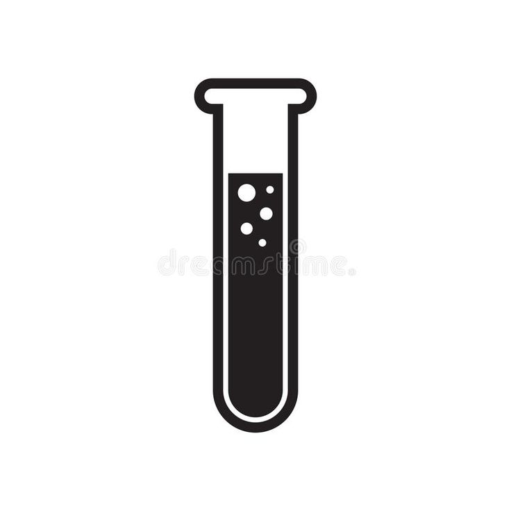

Blood is transported to a lab for testing and processing.
Blood is processed into components: plasma, red blood cells, and platelets.
Blood is tested to ensure it is safe for transfusion.
Hospitals place orders for blood based on needs.

Blood is stored for use—platelets last 5 days, RBCs 42, plasma 2 years.
Blood is transfused—1 donation can save up to 3 lives.
A Pint of Blood is Drawn from Donor
The process begins with a donor voluntarily agreeing to give blood. After a quick eligibility screening, a sterile needle is inserted into a vein in the arm, and approximately one pint (about 470 ml) of blood is drawn.
The procedure typically takes about 8–10 minutes and is conducted under the supervision of trained medical staff. Donors are provided with a comfortable seat, and sterile equipment is used to ensure safety.
After donation, the donor is asked to rest briefly and offered refreshments to help recover. The body replenishes the donated blood volume within 24–48 hours.
Blood is Collected and Labeled
After a donor is deemed eligible, approximately one pint (about 470–500 mL) of whole blood is collected using sterile, single-use needles and blood bags that contain anticoagulant solutions to prevent clotting.
The blood is labeled with a barcode, date, and coded donor info for tracking and safety, following ISBT 128 standards.
Blood is Transported to a Lab
Blood is transported in insulated containers between 1°C and 10°C to prevent spoilage. At the lab, it is logged, separated, and sent for disease testing.
Blood is Processed into Components
Using centrifugation, blood is split into red cells, plasma, and platelets. Each part serves different medical needs and is stored separately.
Blood is Tested
Each donation is screened for HIV, hepatitis B/C, syphilis, and more. ABO and Rh type are confirmed for safe transfusion.
Unsafe units are discarded immediately.
Hospitals Place Blood Orders
Hospitals request blood products for surgeries, trauma care, and cancer treatment. The center ensures proper matching and prompt delivery.
Blood is Stored
Red cells are stored at 1–6°C for 42 days, platelets at room temp (5 days), and plasma is frozen up to 2 years.
Blood is Transfused to Patients
Once matched, blood is used for surgeries, trauma recovery, or conditions like anemia. One donation helps up to three patients.